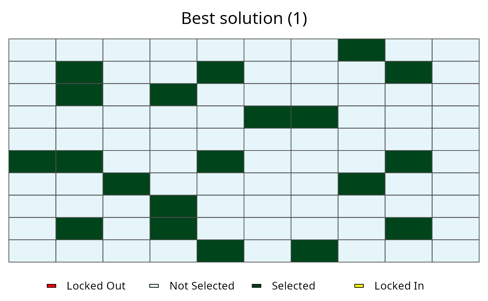

This function plots the solutions contained in RapSolved
objects. It can be used to show a single solution, or the the selection
frequencies of planning units contained in a single RapSolved
object. Additionally, two RapSolved objects can be supplied to
plot the differences between them.
Arguments
| x |
RapSolved object.
|
| y |
Available inputs are: NULL to plot selection frequencies,
numeric number to plot a specific solution,
0 to plot the best solution, and a RapSolved
object to plot differences in solutions between objects. Defaults to
NULL. |
| i |
Available inputs are: NULL to plot selection frequencies.
numeric to plot a specific solution, 0 to plot the best
solution. This argument is only used when y is a
RapSolved object. Defaults to NULL. |
| j |
Available inputs are: NULL to plot selection frequencies.
numeric to plot a specific solution, 0 to plot the best
solution. This argument is only used when y is a
RapSolved object. Defaults to argument j. |
| basemap |
character object indicating the type of basemap to use
(see basemap). Valid options include "none",
"roadmap", "mobile", "satellite", "terrain",
"hybrid", "mapmaker-roadmap", "mapmaker-hybrid".
Defaults to "none".
|
| pu.color.palette |
character name of colors or color palette
(brewer.pal) to indicate planning unit
statuses. Defaults to c("grey30", "green", "yellow", "black",
"gray80", "red", "orange").
|
| alpha |
numeric value to indicating the transparency level for
coloring the planning units.
|
| grayscale |
logical should the basemap be gray-scaled?
|
| main |
character title for the plot. Defaults to NULL and
a default title is used.
|
| force.reset |
logical if basemap data has been cached, should it
be re-downloaded?
|
See also
RapSolved.
Examples
# load example data set with solutions
data(sim_rs)
# plot selection frequencies
plot(sim_rs)

# plot best solution
plot(sim_rs, 0)

# plot second solution
plot(sim_rs, 2)

# plot different between best and second solutions
plot(sim_rs, sim_rs, 0 ,2)